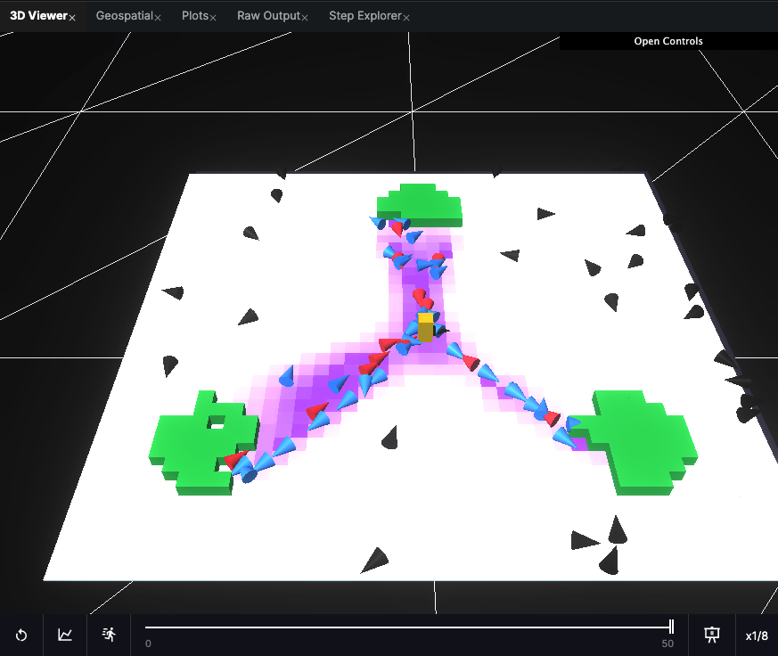
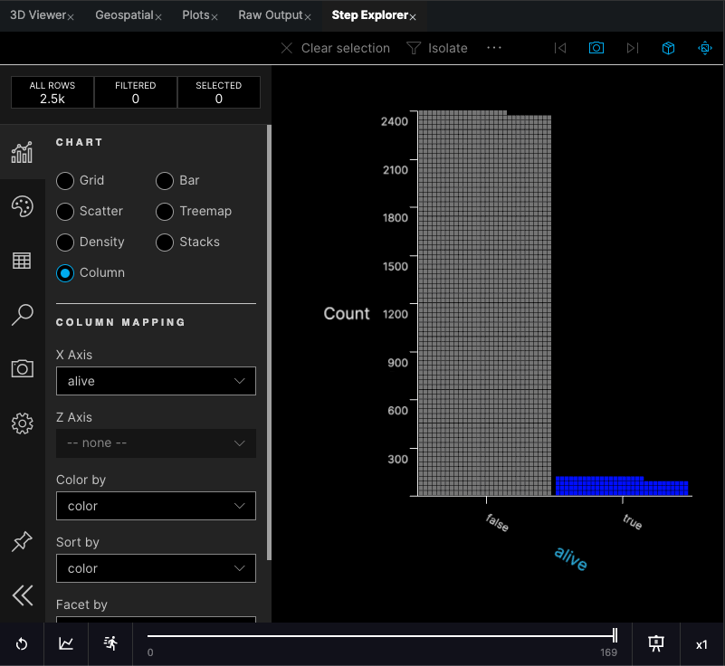

Did I have nothing better to do in 2013?
Did I have nothing better to do in 2013?
Software Developer and former Transport Modeller. LinkedIn.
When reviewing code I might checkout a branch and then return to what I was working on. But what was I working on? Sometimes I can't remember the files I've just been messing with, so I've started using this command:
git --no-pager diff --name-only HEAD~1 HEAD
It lists the edited files between the current head and the last commit. I alias it to git~1.
If you want to create a game to run on the web, you can create one in Unity and then build using the WebGL option. You should configure the builds to be compressed, so the large files can be downloaded quickly by your players in their browsers. Vercel staff recommended to me to use brotli compression as it's better supported. You can pick up the Vercel HTML Starter template. Remove the middleware.js. Add a .gitattirbutes in the root with the following:
*.data.br filter=lfs diff=lfs merge=lfs -text
*.wasm.br filter=lfs diff=lfs merge=lfs -text
Copy in the files Unity built for you, and index.html, some scripts, a directory called Build, and a directory called TemplateData. Rename your Build directory (eg. to Build1), and the index.html (eg. to build1.html). In the build1.html find the buildUrl and change it to the name of your directory, "Build1". This simple adjustment means you can add multiple pages for multiple builds for different games or versions. Make sure you remember to turn on git LFS in Vercel! At the root level, add a vercel.json file with the following:
{
"headers": [
{
"source": "/(.*)\\.br",
"headers": [
{
"key": "Content-Encoding",
"value": "br"
}
]
},
{
"source": "/(.*)\\.wasm\\.br",
"headers": [
{
"key": "Content-Type",
"value": "application/wasm"
}
]
}
]
}
This sets the headers as described in the unity docs. Push this lot, and you should be done. Navigate to the link Vercel gives you, and add /build1.html to the path to get to your page.
I've been working on PDF generation for for a little while and I thought I'd share some of my findings, as it's taken a while and I've explored several options. Before we jump in, my context is that I've got an array of simple javascript objects in a Next.js frontend, and I want to add minimal formatting and style to them, and I want a downloadable pdf result generated at runtime for a live project. It seemed sensible to first create html of the output I wanted, and then convert that to pdf. I've worked on a team that did that before, and I don't want to get bogged down in editing internal pdf syntax! I came across the article Convert HTML to PDF in Node.js with 4 Popular Libraries (Updated 2024) which sounded like a good way to start assessing options. The article presents Node.js libraries:
It would be easier just to do it client side, so Puppeteer and Playwright were straight out.
html-pdf sits on top of PhantomJS (depracated) so the logical choice is to pick up jsPDF. The blog article even has some of the code I'll need, great.
const doc = new jsPDF();
doc.text(textContent, 10, 10);
The 10, 10 arguments are the coordinates (in mm) in the document. If I want to put all my text lines into the pdf I'll have to split lines myself and manage all the styling; write code to add lines at (10, 20), (10, 30) and so on.
So instead of inventing a whole program to display the content maybe lets try another approach?
I next tried Puppeteer, which wouldn't work client side so I created an api endpoint in my project.
However Puppeteer sits atop chrome, and while everything ran smoothly locally, I had trouble running chrome on Vercel, where I was running an api endpoint. As I made my way further into the maze of fruitless fixes on google and stackoverflow I decided to stop and try a different library again.
At this point I considered html-pdf.. It's not ideal as it's been unmaintained for a while, but my use case is simple and I just need a basic solution.
However before proceeding I had a search for "pdf" packages on npmjs.com. I discovered react-to-pdf, a great solution for my usecase, as my starting point was one having all the data on the frontend. With a couple of edits and mapping my data array into basic components with a little styling, I was able to satisfy my requirements. One drawback was that the div containing the content needed to be fully visible, and full height. I didn't want to actually show all the data because at this point it was important that the user clicked to to download, and I didn't want them to be distracted. I set up the screen to have a div concealing the div for pdf output, with a blank div on top containing the download button. The drawbacks of this setup were that a narrow viewport would be reflected in the pdf output, but the project was intended for desktop and really more of a proof of concept, so I decided to stop the engineering at this point.
Lastly it's worth mentioning that there are also web APIs to call with your html which return a pdf, but I think this is probably unnecessary for most developers who can spend just a little more effort running a service themselves in most scenarios.
This is my review of the HASH beta which I enjoyed checking out.

Ant Foraging Example Simulation
HASH is a platform for creating simulations in which agents such as ants or people move and interact according to programmable behaviours. Following the simulation, which can be viewed in 3D, there are built in tools for analysis.
Years ago I wanted to practice writing macros in Excel, and having recently learnt about cellular automata and Conway’s game of life, I cooked up a spreadsheet that could run the simulation. Cells (squares) in the simulation with two or three ‘on’ neighbours stay ‘on’ (or ‘alive’) in the next time step; otherwise they switch ‘off’. If a cell is ‘off’ but has three neighbours ‘on’, it will switch ‘on’ in the next time step; otherwise it stays ‘off’. People have developed interesting arrangements like
gliders and
guns which don’t self annihilate or cycle endlessly.
Did I have nothing better to do in 2013?
I had a look at the
js version on Conway’s Game of Life HASH.
The project is neatly defined by a collection of json files and at each time step javascript code is executed to calculate the next state using your computer. This can be slow for complex simulations, and it looks like the incoming cloud based compute option is where HASH is looking to make money.
The core interface accommodates a modest modern IDE and several visualisation tabs. On the ‘Raw Output’ tab you can see the log of state changes as a json list. At the bottom of whatever visualisation you’ve chosen is the execution panel where you can start, stop and replay the simulation.

HASH is intuitive to use and I like how they’ve decomposed simulations to their component parts.
The HASH platform is particularly interesting to me as I used to do traffic and pedestrian modelling in Aimsun. Whilst Aimsun is one of the very best transport modelling tools available, there are some significant deficiencies in the way modelling is possible, and I think HASH may address some of these.
One example would be cyclist modelling. In Aimsun, vehicles including bikes have a fixed path, as if they were following rails on the ground. Whilst the Aimsun team has added features to change lanes on multi-lane roads, and more recently overtaking using the opposite side of the road, the product falls far short of realistic 3 dimensional interactions between cyclists and cars. Freedom for simulated vehicles to move into gaps and around temporary objects is crucial to accurately describing behaviour, and where lacking could lead to conclusions which are dangerous to road users. There are a few academic simulations I’ve seen which do more realistic modelling of 3d space, but to me they have seemed fairly custom/not very accessible (I seem to remember a single road with simulated vehicles being rendered in Unreal Engine, in order to illustrate traffic patterns). If HASH offers an accessible and standard way of setting up such simulations it could be adopted quickly in academia and become a meaningful competitor commercially.
Another modelling assumption made for you in Aimsun and nearly all transport modelling software is that people make trips from a fixed origin to a fixed destination, and don’t care to travel anywhere else on their way. I think any platform that allows more depth of purpose is a step in the right direction. The decision makers for transport infrastructure and modellers have historically simplified trips to origin-destination matrices because it’s easier. They also tend to have a blind spot because most of these professionals have a role in society which is less likely to involve a round trip dropping kids off at school, shopping for groceries, part-time work, or going to care for an elderly relative.
Smaller scale modelling also has depth of purpose challenges. Modelling car parks is only meaningful if there are spaces involved, and a continually evolving landscape of availability. Being able to add code to model more complex goals unlocks many possibilities. It’s not too far-fetched to imagine training a ML model to make human like decisions about purpose.
While HASH gives the user a lot of freedom, there is an overhead in learning to code (not a bad thing in my opinion). For the scores of transport planners using technically limited but familiar and undemanding specialist software, a couple of ‘wizards’ to help setup simulations may aid uptake. Aimsun has a feature to automatically generate roads from Open Street Map layers, which is an amazing time-saver for transport planning professionals. We also used to waste time fiddling to import altitude points from Google’s API for a realistic 3d surface. I’d highly recommend the folks at HASH look into streamlining these sorts of tasks to enhance the experience for professional users. At the time of writing it looks like they’re adding an ‘Initial state generation wizard’ and some other stuff which has high value
Will People Use HASH
Yes. I can imagine studies at ITS Leeds or elsewhere cultivating an academic userbase. Also if I were still in the industry, and modelling the use of an arena by pedestrians with a closed-source paid application, I’d experiment with HASH. Given a few refinements, it could be a much needed disruptor. For now 3d actors are currently mostly cubes and the geospatial features haven’t been developed fully. I’m keen to see the roadmap unfold like open-sourcing the Rust Engine. Most of all I look forward to seeing interesting model implementations.
Yesterday (17th June) I attended the AWS Summit Online for Europe, Middle East & Africa. The event was bookended by talks from CTO Dr. Werner Vogels and CEO Andy Jassy. I was a little disappointed that there were no major announcements, but the talks focussed on general positive outcomes for AWS clients.
I chose the ‘I build applications’ track and attended the 5 talks:
Purpose-built databases for modern applications (Level 300)
This was good revision for the Solutions Architect Certification I’m working on; nothing new though. The talk briefly mentions the different database options:
Full-stack mobile and web development with AWS Amplify (Level 300)
An introduction to Amplify. I’ve not used Amplify but the talk inspired me to follow up with a basic deployment. Lots of stuff taken care of for you out of the box. I’m not sure how I feel about this, I like to know a little about how everything works in case it goes wrong. Still, looks amazing for prototyping.
Application integration patterns for microservices (Level 300)
The merits of SNS, SQS, and Step Functions.
Event-driven architecture (Level 300)
The merits of API Gateway and Event Bridge.
A path to event sourcing with Amazon MSK (Level 200)
MSK: Amazon Managed Streaming for Apache Kafka
Event sourcing –
Persist entities by storing a sequence of state-changing events.
I need to read more on this because it has some relevance for some client work.
Some points on AWS –
Netflix, Disney+, and Hulu all use AWS.
AWS profit for Q2 this year was $4bn.
Some sage advice –
Work with lots of experiments with ‘2-way doors’ (decisions you can revert). Think carefully and minimise ‘1-way doors’ (decisions which are difficult to revert).
Speed disproportionately matters.
We had an excellent DevOps meeting tonight, with James Healey from Carbon DMP, and Matthew Skelton from Conflux presenting.
James explained how he and his team did monitoring, alerting, and support. (Side note: he’d presented before at a prison as part of charitable education work there,
https://www.code4000.org I think). As of recently, Azure and Rancher have good monitoring capabilities natively. Azure for stock or custom queries, and Rancher for CPU utilisation etc. Azure and AWS cost explorers have also recently had developments to make the costing a lot more visualisable. They use lots of familiar tooling; AWS, Rancher, Pager Duty, Trello, Kubernetes.
Other things to check out mentioned in the talk were Certcheckr and Kube-backup.
Matthew talked about the context and succession of The Spotify Model (
there is no Spotify model). From a number of countries, businesses, and studies, some findings and principles arose. The talk arrived at some of these and more depth can be found in the book which is out tomorrow.
Ideas included:
Team first thinking – considering teams as the production units and fitting work to them
Choosing team boundaries carefully
Considerations for the physical and digital workspaces; the Reverse Conway Effect which is to preemptively order teams as per the interactions expected of an efficient system
There are 3 fundamental team interaction modes: Collaboration, Provider/Consumer, and Facilitator/Follower.
Read later – Conway’s 1968 paper
Link: https://www.meetup.com/LeedsDevops/events/264672882/
I led a session for beginners on how to make an image classifier with Python. I used repl for the steps which you can find here: https://repl.it/@JohnJames5/x
We had 2 speakers at DevOps this month, James Scanlan from the NHS Digital Digital Delivery Centre, and Tim Edmonds from Accenture/Channel 4.
I know James from my previous work at NHSD. His talk was fairly informal and focussed on the importance of Culture in the workplace. Having worked in the environment James described and experiencing the challenges and benefits associated with the culture I didn’t take away so much from the presentation, but he had some good references.
The talk from Tim Edmonds about the challenges delivering content for Channel 4’s digital video streaming platform was very interesting. His team had a strong focus experimentation; it was interesting to see the modifications they had made in the speed at which they loaded different components of the Channel 4 On Demand service homepage.
link: https://www.meetup.com/LeedsDevops/events/263040456/
I attended a Lean In Circle yesterday which was hosted in the BJSS office. We had two speakers:
Alison Lowe – CEO – Touchstone
Touchstone are an exemplary example of a fair and inclusive company. Through commitment to training staff in different ways to respect and support each-other, the charity is recognised by staff and its many accolades as being a decent place to work for everyone. The training, around Gender Identity, Sexual Orientation, and more, is mandatory for all staff. There are also internal groups for support, such Pink Pals for LGBT allies. Alison recently concluded duties as a Labour Councillor in Leeds and was one of the most engaging speakers I’ve experienced.
Stuart Bullock – MD – BJSS
BJSS is one of the leading software consultancies in the UK. Stuart described some of the challenges in the industry and the company, and measures that were being taken to ensure the diverse requirements of staff were being satisfied. This aligned with the company’s core values. Flexible working and part-time roles were an important way to ensure inclusion, and Stuart was clear that demanding clients would have to accept this as the way business with BJSS is done.
We also had an unconscious bias exercise. This was new to me and I think a highly valuable experiment. I’ll be proposing a similar exercise at Infinity Works. The exercise involves realising assumptions you make given a partial description of a character, and then admitting and discussing the assumptions with your group.
As a break from our usual approach of providing tech classes, this Code Up featured several talks by people who had switch careers into software development. I was first up and delivered a talk on my previous life as a transport planner, and my transition. The talk went well but I got a couple of pieces of feedback for future presentations.
I said “yeah” to fill gaps. I have been working on reducing the number of times I say “umm” during presentations so this is an interesting manifestation. However I definitely hope to address it and just keep the silent breaks in the future.
I often stood with one hand on one hip. I didn’t realise I was doing this, but the “I’m a little teapot” look is definitely not something I’m aiming for.
Beforehand I joked about the talk being great because it was about me. It concerns me in hindsight that I might look arrogant.
I went to Agile in Leeds on Tuesday 15th, there were 3 lightening talks.
Book club was about a guy at sky who met with his team of 4 other scrummasters to discuss a chapter each week, generally books about agile. This seemed a really interesting and useful idea.
Long sprints (6 weeks) for the regression testing team seemed symptomatic of issues with using scrum, issues with the business structure, and slow testing.
M is for MVP described the troubles and ambiguity of MVP (minimum viable product) for those unaccustomed to short releases. There was warning from experience that some stakeholders will want all their features in because they might expect to wait a year before their next opportunity.